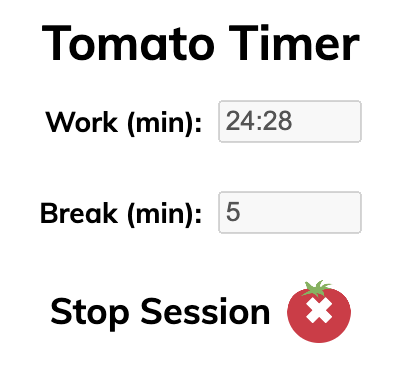

Overview
The Pomodoro Technique is a time-management / productivity technique developed by Francesco Cirillo.
This Chrome Extension provides an adjustable timer for implementing this study technique. I will not be publishing the Chrome Extension because I don’t want to pay the $5 developer fee for a product I won’t use myself.
You can find the source code here.
Manual Installation
- Download the source code
- Open Chrome and go to
chrome://extensions/ - In the top right corner, enable “Developer mode”
- In the top left corner, click “Load unpacked”
- Select the folder
Tomato Timernottomato_timer - Click the puzzle piece in the top right of the browser window
- Click the pin to the right of “Tomato Timer”
Tangent Towards Timing Tomatoes
A few weeks ago, I learned that “tomato” in Italian is “pomodoro.” Before this, I had only ever heard the word “pomodoro” in the context of the Pomodoro Technique. While I don’t fully buy the Pomodoro Technique, I knew I wanted to create something that commented on pomodoro meaning tomato, even if the joke was only new to me.
A week later, I still couldn’t wrap my head around why tomato in Italian was pomodoro. So many Romance languages use a word similar to “tomato” to represent the red produce (owing to Nahuatl), but not Italian. It turns out that “pomodoro” comes from “pomo d’oro,” which translates to “golden apple” or “golden fruit.” This made sense for a bit, and it gave me an idea for renaming “golden apples” to “pomodori” in the video game that makes heavy use of golden apples (you know the one), but then I was confused again.
If I’m not mistaken (though it is likely that I am), the more common way to say “apple” in Italian is “mela,” but “pomo” makes so much more sense, especially in the context of other Romance languages like the word “pomme” in French, which comes from Latin words referencing fruit plucked from trees, or those trees themselves. After looking into it, “mela” likely comes from Vulgar Latin. But the words from which it comes do not mean “apple” or “plucked fruit.” Instead, they derive from “malus,” roughly meaning “evil.” I’ll leave it as an exercise to the reader to think about why the word “apple” might come from the word “evil.”
My other comment is on the fact that they were called “golden.” Why? Tomatoes are red, aren’t they? Well, they didn’t always have that distinct red. Fifteen hundred years ago, it was much less common to find deep red tomatoes. Instead, many were yellow when ripe. This was around the time that tomatoes were being brought back to Europe, thus giving rise to the name “pomodoro.”
Resources
Google’s Getting Started Guide and Documentation
Logo Source (not my own design)